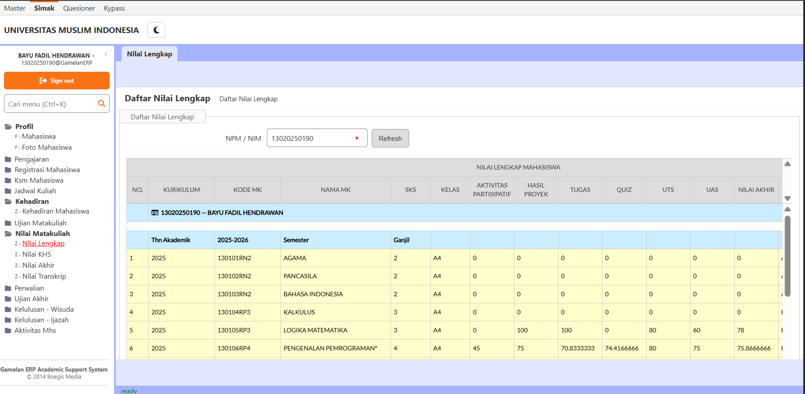
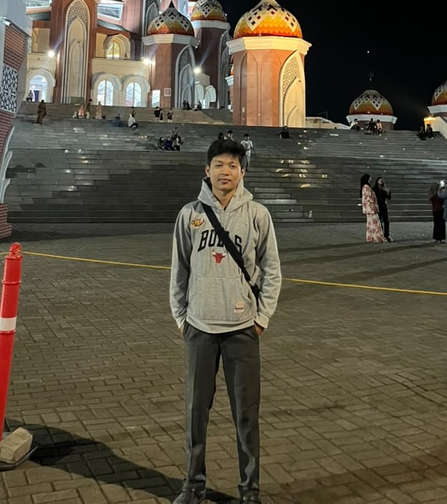
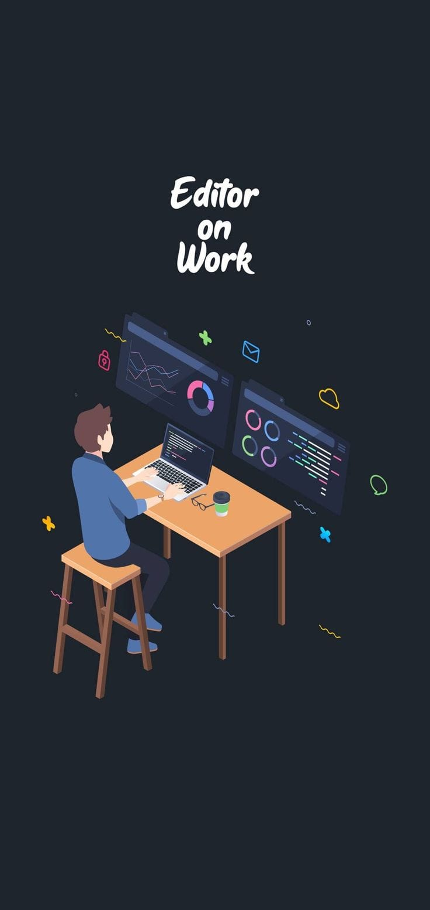

Sistem Informasi Akademik
Rancangan sistem untuk mengelola data mahasiswa, jadwal, dan nilai.
Lihat Detail
Mahasiswa Teknik Informatika Universitas Muslim Indonesia
Halo, saya Bayu Fadil. Saya suka belajar pemrograman dan sistem operasi, lalu mengubahnya menjadi proyek nyata. Saya sangat menyukai bahasa pemrograman HTML dan CSS untuk membangun website yang responsif.
Lihat Proyek Hubungi Saya
Rancangan sistem untuk mengelola data mahasiswa, jadwal, dan nilai.
Lihat DetailPanduan langkah demi langkah membuat partisi menggunakan VirtualBox.
Lihat Detail
Halaman pribadi yang responsif menggunakan HTML dan CSS.
Lihat DetailTerbuka untuk kolaborasi, magang, dan diskusi.
fadilb784@gmail.com instagram.com/byuu.wan linkedin.com/in/bayu-fadil